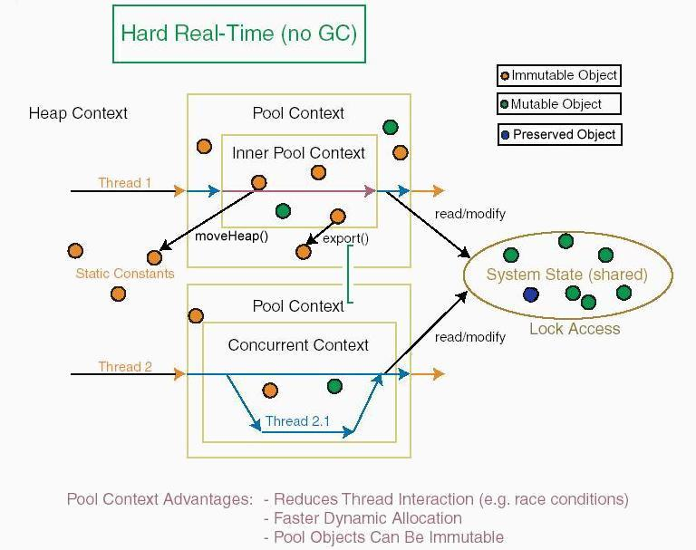

Provides real-time {@link javolution.realtime.Context} for higher performance and higher predictability of Java bytecode execution.
Javolution real-time framework provides additional {@link javolution.realtime.Realtime.ObjectSpace objects spaces} other than the heap space; such as the "stack" space or the "hold" space. The object space determines when object recycling does occur:
This facility works with any VM or even native executable (GCJ). It is also well suited for RTSJ VMs
IllegalAssignmentError: Stack objects can be
{@link javolution.realtime.AllocationProfile preallocated} in heap or immortal memory
and be referenced from any other objects. For example:
void main(String[]) {
// Preallocates factory objects in immortal memory at start-up.
ImmortalMemory.instance().enter(new Runnable() {
public void run() {
AllocationProfile.load();
}
});
}MemoryAccessError: NoHeapRealTimeThread
may communicate with other threads through objects in immortal memory
with Javolution doing the recycling (necessary as immortal
memory is never garbage collected).Javolution allows your application to control when the object creation does occur! In other words, even when using the default heap space, you can move object allocation and garbage collection out of your high-performance code (see {@link javolution.realtime.AllocationProfile AllocationProfile}).
If the third party library performs dynamic memory allocations in normal methods (not constructors), you might not be able to avoid garbage collection. But you cannot get determinism using "any" third party library anyway, regardless of the garbage collector issue. Array resizing, lazy initialization, map rehashing (...) would all introduce unexpected delays (this is why Javolution comes with its own real-time collection implementation). Still, you have several options:
System.gc()).The latest solution works only with non-moving garbage collectors such as the Boehm-Weiser collector employed by the Gnu Compiler for Java. Native compilers (such as the GCJ) or Ahead-of-Time compilers are also recommended to avoid JIT compilation interruptions (common with the HotSpot VM).
The basic idea is to associate objects pools to Java threads. These pools can be nested, with the heap being the root of all pools. You may consider pools' objects as part of the thread stack memory, with pools being pushed and popped as the thread enters/exits {@link javolution.realtime.PoolContext PoolContext}. To allocate from its stack, a thread needs to execute within a pool context and create new objects using {@link javolution.realtime.ObjectFactory factories} (the "new" keyword always allocates on the heap, Javolution does not/cannot change the Java Virtual Machine behavior). This mechanism is similar to the allocation on the stack of locally declared primitive variables, but now extended to non-primitive objects.
Classes encapsulating calls to object factories within
factory methods (e.g. valueOf(...)) and
whose methods do not create temporary objects using the "new" keyword
are known as "real-time compliant".
The simplest way is to extend {@link javolution.realtime.RealtimeObject RealtimeObject} and use a factory to create new instances. For example:
public static final class Coordinates extends RealtimeObject {
private double _latitude;
private double _longitude;
private static final Factory<Coordinates> FACTORY = new Factory<Coordinates>() {
protected Coordinates create() {
return new Coordinates();
}
};
private Coordinates() {}
public static Coordinates valueOf(double latitude, double longitude) {
Coordinates c = FACTORY.object();
c._latitude = latitude;
c._longitude = longitude;
return c;
}
}
Et voila! Your class is now real-time compliant!
The following code shows the accelerating effect of stack allocations.
public static void main(String[] args) {
Coordinates[] vertices = new Coordinates[1000000];
for (int i=0; i < 10; i++) {
long time = System.currentTimeMillis();
PoolContext.enter();
try {
for (int j = 0; j < vertices.length; j++) {
vertices[j] = Coordinates.valueOf(i, j);
// vertices[j] = new Coordinates(i, j);
}
}finally {
PoolContext.exit();
}
time = System.currentTimeMillis()-time;
System.out.println("Time = " + time);
}
}
The first iteration is slower in this example because {@link javolution.realtime.AllocationProfile preallocation}
has not been performed (objects are created on demand to populate the stack).Time = 1359 Time = 110 Time = 110 Time = 110 Time = 109 Time = 109 Time = 110 Time = 110 Time = 110 Time = 110
The same program allocating directly on the heap (e.g. new Coordinates(i, j))
produces the following result:
Time = 1140 Time = 1344 Time = 1296 Time = 1282 Time = 1312 Time = 1266 Time = 1312 Time = 828 Time = 1313 Time = 1266Not only code execution is 10x time slower but there is much more fluctuation in the execution time due to GC.
Stack allocation is a simple and transparent way to make your methods "clean" (no garbage generated), it has also the side effect of making your methods faster and more time-predictable. If all your methods are "clean" then your whole application is "clean", faster and more time-predictable (aka real-time).
Applications may use the facility to different degrees. For example, to improve performance one might identify the biggest "garbage producers" and use stack allocations instead of heap allocations for those only. Others might want to run high priority threads in a pool context and by avoiding heap allocations (and potential GC wait), make these threads highly deterministic.
In practice, very few methods declare a pool context for local stack allocations, only the "dirty" ones (the one generating a lot of garbage). Iterations are often good candidates as they typically generate a lot of garbage. For example:
public Matrix pow(int exp) {
PoolContext.enter(); // Starts local stack allocation.
try {
Matrix pow2 = this;
Matrix result = null;
while (exp >= 1) { // Iteration.
if ((exp & 1) == 1) {
result = (result == null) ? pow2 : result.times(pow2);
}
pow2 = pow2.times(pow2);
exp >>>= 1;
}
return result.export(); // Exports result to outer stack (or heap).
} finally {
PoolContext.exit(); // Resets local stack (all temporary objects recycled at once).
}
}
For the very "dirty" (e.g. very long interations), one pool context might not be enough and may cause memory overflow. You might have to break down the iteration loop and use inner pool contexts. Also, by using multiple layers of small nested pool contexts instead of a single large pool, one keeps the pools' memory footprint very low and still benefits fully from the facility. Pools of a few dozens objects are almost as efficient as larger pools. This is because entering/exiting pool contexts is fast and the CPU cache is more effective with small pools.
Individual recycling is possible for methods having access to the object pool. It is the case for code declaring {@link javolution.realtime.ObjectFactory factory} instances (usually private) or for {@link javolution.realtime.RealtimeObject RealtimeObject} sub-classes through the protected {@link javolution.realtime.RealtimeObject#recycle recycle} method.
// Use of factory pool access to recycle immediately.
//
ObjectPool<char[]> charsPool = CHAR_1024_FACTORY.currentPool();
char[] buffer = charsPool.next(); // Next object from pool.
for (int i = reader.read(buffer, 0, buffer.length); i > 0;) {
...
}
charsPool.recycle(buffer); // Puts object back into its pool immediatly (optional).
...
private static final ObjectFactory<char[]> CHAR_1024_FACTORY = new ObjectFactory<char[]>() {
public char[] create() { return new char[1024]; }
};
// Use of protected recycle method to recycle immediately.
//
public LargeInteger gcd(LargeInteger that) {
LargeInteger a = this.abs();
LargeInteger b = that.abs();
while (!b.isZero()) {
LargeInteger tmp = a.divide(b);
LargeInteger c = tmp.getRemainder();
tmp.recycle(); // Individual recycling affects local objects only
a.recycle(); // (no effect on heap objects or outer objects).
a = b;
b = c;
}
return a;
}
No, as long as you {@link javolution.realtime.RealtimeObject#export export} or {@link javolution.realtime.RealtimeObject#preserve preserve} the objects which might be referenced outside of the pool context, immutable objects stay immutable! Furthermore, you do not have to worry about thread synchronization as stack objects are thread-local.
In practice, very few methods have to worry about these constraints. They are:
The methods with the pool context try, finally block statement defined.
They have to ensure that objects created/modified inside the context scope and
accessible outside of the scope are {@link javolution.realtime.RealtimeObject#export exported}
(a return value typically).
The methods creating or modifying static objects.
Becauses static objects can be accessed from any thread, local objects
need to be {@link javolution.realtime.RealtimeObject#moveHeap moved to the heap}
or better {@link javolution.realtime.RealtimeObject#preserve preserved} when made accessible
from a static object (when using preserve, one will have to
{@link javolution.realtime.RealtimeObject#unpreserve unpreserved} at a later
time, typically when the preserved value is replaced).
For additional safety, IllegalAccessError are raised during execution when the rules above are broken.
In truth, object spaces promote the use of immutable objects (as their allocation cost is being significantly reduced), reduces thread interaction (e.g. race conditions) and often lead to safer, faster and more robust applications.
A resounding Yes! The easiest way is to ensure that all your threads run in a pool context, only static constants are exported to the heap and your system state can be updated without allocating new objects. This last condition is easily satisfied by using mutable objects or by preventing local (on the stack) immutable objects from being automatically recycled. The following illustrates this capability:
// This thread recycles its objects itself (very fast).
class Navigator extends Thread {
private Coordinates position = Coordinates.valueOf(0, 0);
public void run() {
while (true) {
PoolContext.enter();
try {
Coordinates newPosition = calculatePosition(); // Performed using objects from this pool context.
position.unpreserve(); // Allows old position object to be recycled
synchronized (this) {
position = newPosition.preserve();
}
} finally {
PoolContext.exit(); // Recycles all stack objects except the position object
} // (very fast, just a stack pointer reset).
}
}
public synchronized Coordinates getPosition() { // On the stack of the calling thread.
return position.copy();
}
}

Some JDK library classes may create temporary objects on the heap and
therefore should be avoided or replaced by "cleaner" classes
(e.g. {@link javolution.util.FastMap FastMap} instead of java.lang.HashMap,
{@link javolution.lang.TextBuilder TextBuilder} instead of java.lang.StringBuffer
(setLength(0) allocates a new internal array) and
{@link javolution.lang.TypeFormat TypeFormat} for parsing/formatting of primitive types).
Classes avoiding dynamic memory allocation are significantly faster. For example, our {@link javolution.xml.sax.XmlSaxParserImpl XmlSaxParserImpl} and {@link javolution.xml.pull.XmlPullParserImpl XmlPullParserImpl} are 3-5x faster than any conventional xml parsers. To avoid synchronization issues, it is often easier to allocate new objects. Other techniques such as the "returnValue" parameter are particularly ugly and unsafe as they require mutability. Javolution's real-time facility promotes the dynamic creation of immutable objects as these object creations are fast and have no adverse effect on garbage collection. Basically, with pool contexts, the CPU is busy doing the "real thing" not "memory management"!
The cost of allocating on the heap is somewhat proportional
to the size of the object being allocated. By avoiding or postponing this
cost you can drastically increase the execution speed. The largest objects
benefit the most. For example, adding LargeInteger in a pool context
is at least 6x faster than adding
java.math.BigInteger,
our {@link javolution.lang.Text Text} class
can be several orders of magnitude faster
than java.lang.String.
Not surprising when you know that even "empty" Strings
take 40 bytes of memory which have to be initialized and garbage collected!
Recycling objects is always more efficient than just recycling memory (aka GC). Our {@link javolution.util.FastMap FastMap} is a complex object using preallocated linked lists. It is fast but costly to build. Nevertheless, in a pool context it can be used as a throw-away map because the construction cost is then reduced to nothing!
Concurrent garbage collection is the perfect complement to Javolution real-time facility. For example, with a real-time garbage collector, preallocation can be performed by a background thread making sure that objects are ready when the application needs them. It should be noted that even with an infinitely fast garbage collector, applications using Javolution will always be faster because they do not have to go through the object creation/initialization/setup process for each new object.
For real-time virtual machines, the advantages of the facility are threefold:
NoHeapRealTimeThread with other threads
by having shared objects in immortal memory and Javolution
doing the recycling (necessary as immortal memory is never garbage collected).Sure, here is a code excerpt from a developer working on genetic algorithms:
public static void main(String[] args) {
FastList<Amoeba> population = new FastList<Amoeba>();
FastTable<Amoeba> survivors = new FastTable<Amoeba>();
for (int i = 0; i < POPULATION_SIZE; i++) {
population.add(Amoeba.newInstance());
}
while (...) {
PoolContext.enter();
try {
for (FastList.Node<Amoeba> n = population.headNode(), end = population.tailNode(); (n = n.getNextNode()) != end;) {
Amoeba a = n.getValue();
if (a.getSurvivalLevel() >= average) {
survivors.add(a);
} else {
a.unpreserve(); // Allows recycling.
}
}
population.clear();
population.addAll(survivors);
for (int i = population.size(); i < POPULATION_SIZE; i++) {
Amoeba male = survivors.get(MathLib.randomInt(0, survivors.size()-1));
Amoeba female = survivors.get(MathLib.randomInt(0, survivors.size()-1));
population.add(PairingUtil.pair(male, female).preserve()); // New amoeba allocated on the stack but preserved!
}
survivors.clear();
generation++;
} finally { // Recycles all stack objects except for the current amoeba population.
PoolContext.exit(); // Recycles.
}
}
}
...
public int getSurvivalLevel() {
ObjectPool<int[][]> boardPool = BOARD_FACTORY.currentPool();
int[][] board = boardPool.next(); // Returns thread-local board.
... // Do some complicate stuff with the board (board game ?)
int level = 0;
for (int i = 0; i < 8; i++) {
for (int j = 0; j < 8; j++) {
level += board[i][j];
}
}
boardPool.recycle(board); // Immediate recycling.
return level;
}
private static ObjectFactory<int[][]> BOARD_FACTORY = new ObjectFactory<int[][]>() {
protected int[][] create() {
return new int[8][8];
}
};
The same code without using pool context is several times slower!